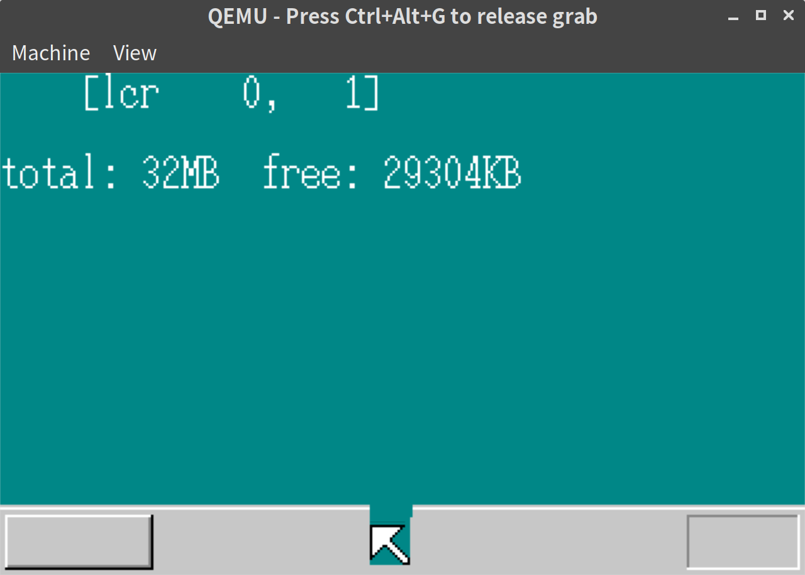
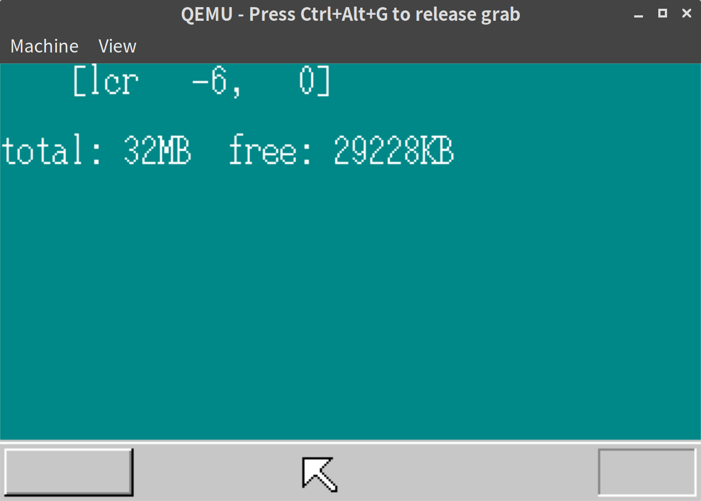
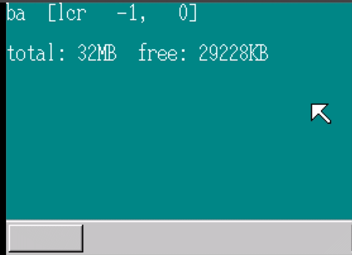

「30日でできる！OS自作入門」をRustで。10日目
「30日でできる！OS自作入門 」のC言語の部分をできるだけRustですすめてみる。10日目。
4KBごとのメモリ管理
前回、バイト単位でのメモリ管理を実装したが、このままではメモリの断片化など取り回しが悪いため、4KBごとのメモリ管理を実装する
// memory.rs
impl MemMan {
// 省略
pub fn alloc_4k(&mut self, size: u32) -> Result<u32, &'static str> {
let size = (size + 0xfff) & 0xfffff000;
self.alloc(size)
}
pub fn free_4k(&mut self, addr: u32, size: u32) -> Result<(), &'static str> {
let size = (size + 0xfff) & 0xfffff000;
self.free(addr, size)
}
}重ね合わせの実装
次に、マウスを動かしたとき、下図のように重複部分の色が消えてしまう問題の解決を行う。

具体的にはレイヤー構造を導入し、レイヤーの背景となる部分は透過するようにする。透過処理は即ち下のレイヤーから色をひろってくる、ということだ。
vga.rsの修正
このあたりの実装にともない、VRAMのアドレスに直接書き込んでいく形式ではなくなったため、当初のvga.rsを大幅に書き換えている。具体的には当初の Screen structをなくし、画面サイズなどはlazy_staticによるstatic値とした。
// vga.rs
lazy_static! {
pub static ref SCREEN_WIDTH: i16 = unsafe { *(0x0ff4 as *const i16) };
pub static ref SCREEN_HEIGHT: i16 = unsafe { *(0x0ff6 as *const i16) };
pub static ref VRAM_ADDR: usize = unsafe { *(0xff8 as *const usize) };
}
// Screen structのメソッドとして実装していたものをvgaモジュールのトップレベル関数にする。
pub fn init_palette() {
let eflags = asm::load_eflags();
asm::cli();
asm::out8(0x03c8, 0);
for i in 0..16 {
// 書き込むときは上位2ビットを0にしないといけない。See: http://oswiki.osask.jp/?VGA#o2d4bfd3
asm::out8(0x03c9, COLOR_PALETTE[i][0] / 4);
asm::out8(0x03c9, COLOR_PALETTE[i][1] / 4);
asm::out8(0x03c9, COLOR_PALETTE[i][2] / 4);
}
asm::store_eflags(eflags);
}
// 以下省略Sheetの導入
レイヤーに相当するものとして、本と同様に Sheet というstructを定義して管理するようにした。
本では SHTCTL に相当する Sheet の配列をもつstructを SheetManager とした。本の SHTCTL はSheetの配列と高さで並びかえた参照の配列の2種類をもっている。 SheetManager でもこれにならい、Sheetの順番保持用の配列とデータの実体保持用の配列を作った。参照で持たせるのはRustではとりまわしが面倒なため、実体の配列のインデックスをもたせるようにした。
// sheet.rs
use core::cmp::min;
use crate::vga::{Color, VRAM_ADDR, SCREEN_HEIGHT, SCREEN_WIDTH};
#[derive(Debug, Clone, Copy, PartialEq, Eq)]
pub enum SheetFlag {
AVAILABLE,
USED,
}
#[derive(Debug, Clone, Copy, PartialEq, Eq)]
pub struct Sheet {
pub buf_addr: usize,
pub width: u32,
pub height: u32,
pub x: u32,
pub y: u32,
pub transparent: Option<Color>,
pub z: Option<usize>, // 重ねあわせたときの高さ
pub flag: SheetFlag,
}
impl Sheet {
pub fn new() -> Sheet {
Sheet {
buf_addr: 0,
width: 0,
height: 0,
x: 0,
y: 0,
transparent: None,
z: None,
flag: SheetFlag::AVAILABLE,
}
}
pub fn set(&mut self, buf_addr: usize, width: u32, height: u32, transparent: Option<Color>) {
self.buf_addr = buf_addr;
self.width = width;
self.height = height;
self.transparent = transparent;
}
}
const MAX_SHEETS: usize = 256;
pub struct SheetManager {
pub z_max: Option<usize>, // 一番上のSheetのz
pub sheets: [usize; MAX_SHEETS], // sheets_data上のindexを保持する
pub sheets_data: [Sheet; MAX_SHEETS], // sheetデータの実体
}
impl SheetManager {
pub fn new() -> SheetManager {
SheetManager {
z_max: None,
sheets: [0; MAX_SHEETS],
sheets_data: [Sheet::new(); MAX_SHEETS],
}
}
// Sheetの情報をセットする
pub fn set_buf(
&mut self,
sheet_index: usize,
buf_addr: usize,
width: u32,
height: u32,
transparent: Option<Color>,
) {
let sheet = &mut self.sheets_data[sheet_index];
sheet.set(buf_addr, width, height, transparent);
}
// 実体データから使用可能なものを払出す
pub fn alloc(&mut self) -> Option<usize> {
for i in 0..MAX_SHEETS {
if self.sheets_data[i].flag == SheetFlag::AVAILABLE {
let mut sheet = &mut self.sheets_data[i];
sheet.flag = SheetFlag::USED;
sheet.z = None;
return Some(i);
}
}
None
}
// 指定された領域内の重ね合わせの計算を行う
pub fn refresh_part(&self, x0: u32, y0: u32, x1: u32, y1: u32) {
if self.z_max.is_none() {
return;
}
for h in 0..=self.z_max.unwrap() {
let sheet = &self.sheets_data[self.sheets[h as usize]];
let bx0 = if x0 > sheet.x { x0 - sheet.x } else { 0 } as usize;
let by0 = if y0 > sheet.y { y0 - sheet.y } else { 0 } as usize;
let bx1 = if x1 > sheet.x {
min(x1 - sheet.x, sheet.width)
} else {
0
} as usize;
let by1 = if y1 > sheet.y {
min(y1 - sheet.y, sheet.height)
} else {
0
} as usize;
for by in by0..by1 {
let vy = sheet.y as usize + by;
for bx in bx0..bx1 {
let vx = sheet.x as usize + bx;
let width = sheet.width as usize;
let c = unsafe { *((sheet.buf_addr + by * width + bx) as *const Color) };
if Some(c) != sheet.transparent {
let ptr = unsafe {
&mut *((*VRAM_ADDR as *mut u8)
.offset(vy as isize * *SCREEN_WIDTH as isize + vx as isize))
};
*ptr = c as u8;
}
}
}
}
}
// レイヤーの高さを指定する
pub fn updown(&mut self, sheet_index: usize, oz: Option<usize>) {
// 長い & 実装の詳細はあまりあげてもしょうがないところなので、GitHub参考ということでここでは省く
}
// レイヤーの再描画を行う
pub fn refresh(&self, sheet_index: usize, x0: u32, y0: u32, x1: u32, y1: u32) {
let sheet = self.sheets_data[sheet_index];
if sheet.z.is_some() {
self.refresh_part(sheet.x + x0, sheet.y + y0, sheet.x + x1, sheet.y + y1);
}
}
// レイヤーの相対値での移動の計算をする
pub fn slide_by_diff(&mut self, sheet_index: usize, dx: i32, dy: i32, width: i32, height: i32) {
let scrnx = *SCREEN_WIDTH as i32;
let scrny = *SCREEN_HEIGHT as i32;
let sheet = self.sheets_data[sheet_index];
let mut new_x = sheet.x as i32 + dx;
let mut new_y = sheet.y as i32 + dy;
let xmax = scrnx - width;
let ymax = scrny - height;
if new_x < 0 {
new_x = 0;
} else if new_x > xmax {
new_x = xmax;
}
if new_y < 0 {
new_y = 0;
} else if new_y > ymax {
new_y = ymax;
}
self.slide(sheet_index, new_x as u32, new_y as u32);
}
// レイヤーの絶対値での移動の計算を行う
pub fn slide(&mut self, sheet_index: usize, x: u32, y: u32) {
let sheet = self.sheets_data[sheet_index];
let old_x = sheet.x;
let old_y = sheet.y;
{
let sh = &mut self.sheets_data[sheet_index];
sh.x = x;
sh.y = y;
}
if sheet.z.is_some() {
self.refresh_part(old_x, old_y, old_x + sheet.width, old_y + sheet.height);
self.refresh_part(x, y, x + sheet.width, y + sheet.height);
}
}
// 払出されていたレイヤーを払い出し可能な状態にもどす
pub fn free(&mut self, sheet_index: usize) {
let sheet = self.sheets_data[sheet_index];
if sheet.z.is_some() {
self.updown(sheet_index, None);
}
let mut sheet = &mut self.sheets_data[sheet_index];
sheet.flag = SheetFlag::AVAILABLE;
}
}呼び出し側の修正
上記レイヤーを使って描画するように変更する
// lib.rs
#[no_mangle]
#[start]
pub extern "C" fn haribote_os() {
use asm::{cli, sti, stihlt};
use core::fmt::Write;
use interrupt::{enable_mouse, KEYBUF, MOUSEBUF};
use memory::{MemMan, MEMMAN_ADDR};
use mouse::{Mouse, MouseDec, MOUSE_CURSOR_HEIGHT, MOUSE_CURSOR_WIDTH};
use sheet::SheetManager;
use vga::{
boxfill, init_palette, init_screen, Color, ScreenWriter, SCREEN_HEIGHT, SCREEN_WIDTH,
};
descriptor_table::init();
interrupt::init();
sti();
interrupt::allow_input();
init_palette();
enable_mouse();
let memtotal = memory::memtest(0x00400000, 0xbfffffff);
let memman = unsafe { &mut *(MEMMAN_ADDR as *mut MemMan) };
*memman = MemMan::new();
memman.free(0x00001000, 0x0009e000).unwrap();
memman.free(0x00400000, 2).unwrap();
memman.free(0x00400000, memtotal - 0x00400000).unwrap();
let sheet_manager = unsafe {
&mut *(memman
.alloc_4k(core::mem::size_of::<SheetManager>() as u32)
.unwrap() as *mut SheetManager)
};
*sheet_manager = SheetManager::new();
let shi_bg = sheet_manager.alloc().unwrap();
let shi_mouse = sheet_manager.alloc().unwrap();
let scrnx = *SCREEN_WIDTH as u32;
let scrny = *SCREEN_HEIGHT as u32;
let buf_bg_addr = memman.alloc_4k(scrnx * scrny).unwrap() as usize;
let buf_mouse = [0u8; MOUSE_CURSOR_WIDTH * MOUSE_CURSOR_HEIGHT];
let buf_mouse_addr =
&buf_mouse as *const [u8; MOUSE_CURSOR_HEIGHT * MOUSE_CURSOR_WIDTH] as usize;
sheet_manager.set_buf(shi_bg, buf_bg_addr, scrnx, scrny, None);
sheet_manager.set_buf(
shi_mouse,
buf_mouse_addr,
MOUSE_CURSOR_WIDTH as u32,
MOUSE_CURSOR_HEIGHT as u32,
Some(Color::DarkCyan),
);
init_screen(buf_bg_addr);
let mouse_dec = MouseDec::new();
let mx = (scrnx as i32 - MOUSE_CURSOR_WIDTH as i32) / 2;
let my = (scrny as i32 - MOUSE_CURSOR_HEIGHT as i32 - 28) / 2;
let mouse = Mouse::new(buf_mouse_addr);
mouse.render();
sheet_manager.slide(shi_mouse, mx as u32, my as u32);
sheet_manager.updown(shi_bg, Some(0));
sheet_manager.updown(shi_mouse, Some(1));
boxfill(buf_bg_addr, Color::DarkCyan, 0, 32, 100, 48);
let mut writer = ScreenWriter::new(Some(buf_bg_addr), vga::Color::White, 0, 32);
write!(
writer,
"total: {}MB free: {}KB",
memtotal / (1024 * 1024),
memman.total() / 1024
)
.unwrap();
sheet_manager.refresh(shi_bg, 0, 0, scrnx, 48);
loop {
cli();
if KEYBUF.lock().status() != 0 {
let key = KEYBUF.lock().get().unwrap();
sti();
boxfill(buf_bg_addr, Color::DarkCyan, 0, 0, 16, 16);
let mut writer = ScreenWriter::new(Some(buf_bg_addr), vga::Color::White, 0, 0);
write!(writer, "{:x}", key).unwrap();
sheet_manager.refresh(shi_bg, 0, 0, 16, 16);
} else if MOUSEBUF.lock().status() != 0 {
let i = MOUSEBUF.lock().get().unwrap();
sti();
if mouse_dec.decode(i).is_some() {
boxfill(buf_bg_addr, Color::DarkCyan, 32, 0, 32 + 15 * 8, 16);
let mut writer = ScreenWriter::new(Some(buf_bg_addr), vga::Color::White, 32, 0);
write!(
writer,
"[{}{}{} {:>4},{:>4}]",
if (mouse_dec.btn.get() & 0x01) != 0 {
'L'
} else {
'l'
},
if (mouse_dec.btn.get() & 0x04) != 0 {
'C'
} else {
'c'
},
if (mouse_dec.btn.get() & 0x02) != 0 {
'R'
} else {
'r'
},
mouse_dec.x.get(),
mouse_dec.y.get(),
)
.unwrap();
sheet_manager.refresh(shi_bg, 32, 0, 32 + 15 * 8, 16);
sheet_manager.slide_by_diff(
shi_mouse,
mouse_dec.x.get(),
mouse_dec.y.get(),
MOUSE_CURSOR_WIDTH as i32,
MOUSE_CURSOR_HEIGHT as i32,
);
}
} else {
stihlt();
}
}
}かなり長くなってきたが、基本は一旦レイヤー上に図形や文字をレンダリング、レイヤーを必要に応じて移動して、差分が更新されるようにしている。
マウスは slide や slide_by_diff をつかってレンダリング結果の更新を行っている。
文字や、最初の矩形表示は refresh を使っている。
実行結果
実行してみると以下の通り、マウスを重ねても表示が崩れることがなくなった。
なお、背景用にメモリを確保したため、使用可能なメモリ容量が29228KB になっている

相変らずGIFでのキャプチャがうまくいっていないが、うまくとれたものをついでに貼っておく

10日目は以上となる。ここまでの内容のコードはyoshitsugu/hariboteos_in_rustのday10としてタグを打ってある。